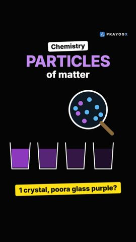
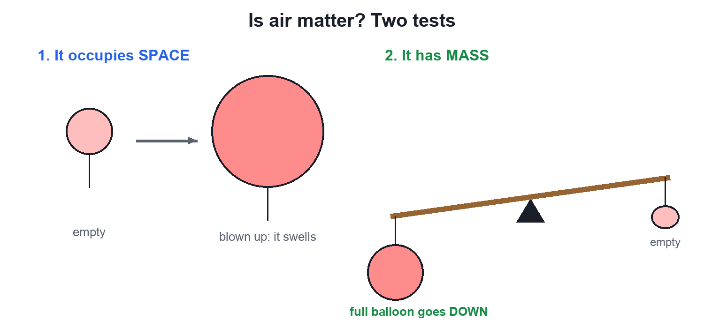
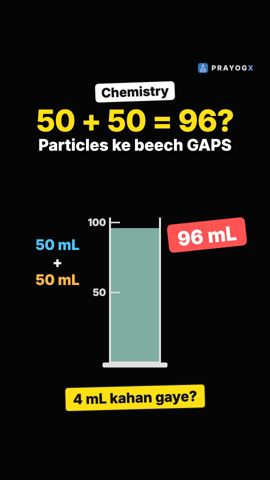
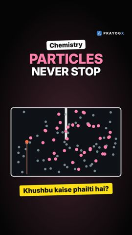

Chapter 1 · Chemistry
What is Matter?
Video not playing? Watch on Instagram · YouTube
Anything that has mass and takes up space is matter, even the air you cannot see.
Download the short notesPDF, 86 KB · solved examples, practice set and answer key Up next in this chapter

Particles of MatterMatter looks continuous, but it is made of extremely small particles. Two crystals of potassium permanganate can colour glass after glass of water.ChemistryKey points
- Matter = anything that has mass and occupies space (volume).
- Air is matter: it fills a balloon and has mass.
- Light, sound, heat and feelings are not matter.
- SI unit of mass: kg; of volume: m³ (1 L = 1 dm³ = 1000 mL).
Mass plus space
A pencil, water, food, stones, steam and your own body are all matter: each has mass and occupies space. Both conditions must be true.
| Term | Meaning | SI unit |
|---|---|---|
| Matter | Anything that has mass and occupies space | – |
| Mass | The amount of matter in an object | kilogram (kg) |
| Volume | The space an object occupies | cubic metre (m³); also litre (L), 1 L = 1 dm³ = 1000 mL |
Is air matter? Two tests

- Space: blow air into a balloon. It swells, so air occupies space.
- Mass: balance a full and an empty balloon on a metre stick. It tips towards the full one, so air has mass.
Matter and not matter
| Matter | Not matter |
|---|---|
| Pencil, water, food, air, our body, stones, steam | Light, sound, heat, feelings, thoughts |
Common mistakes: only things we can see are matter (air is invisible but is matter); sound is matter (sound travels through matter, it is not matter); mixing up mass and volume (a balloon can have a large volume but a small mass).
Quick quiz
5 questions. Choose an answer for each, then submit to see your score and the explanations.
More from Matter in Our Surroundings

Particles Have Spaces Between Them50 mL of water plus 50 mL of alcohol gives only about 96 mL. The reason: particles of matter have spaces between them.Chemistry
Particles of Matter Are Continuously MovingAn agarbatti's smell reaches the next room without a fan. The particles of matter never stop moving, and they move faster when it is hotter.Chemistry · simulation